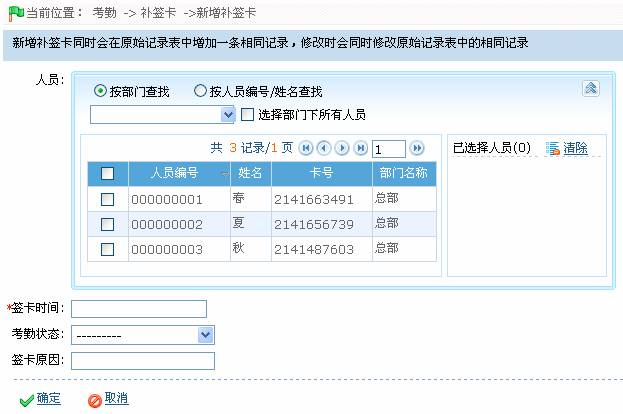
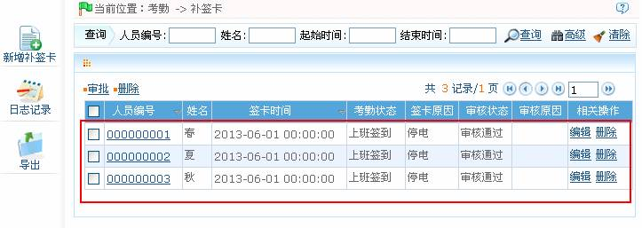

7.6.3 补签卡
在人员因公外出或忘记打卡等情况下，在考勤报表中人工补录考勤记录称为补签卡，一般在考勤周期结束后按照考勤结果和企业的考勤制度，由管理人员汇总录入。
-
 新增补签卡
新增补签卡
1、单击【考勤】 【补签卡】，进入补签卡页面。
【补签卡】，进入补签卡页面。
2、单击补签卡页面上的【新增补签卡】图标，进入新增补签卡页面：

根据需要进行参数设置，具体设置方法如下：
人员：选择需补签卡的人员，可多选；人员的选择方法，请参见附录1 常用操作中的1. 人员选择。
签卡时间：设置补签卡的日期与时间，日期与时间的设置，请参见附录1 常用操作中的8. 选择日期与时间。
考勤状态：单击按钮，在弹出的下拉框中，选择考勤状态；可选择为“上班签到”或“下班签退”。
签卡原因：根据需要输入签卡原因。
（2）、设置完成后，单击【确定】按钮，保存并返回补签卡页面，此时补签卡列表中将显示刚新增的补签卡信息。

 注意：新增补签卡同时会在原始记录表中增加一条相同记录，修改时会同时修改原始记录表中的相同记录。
注意：新增补签卡同时会在原始记录表中增加一条相同记录，修改时会同时修改原始记录表中的相同记录。
 注意：系统管理员添加的补签卡，添加成功即审核通过。员工在员工自助系统添加的补签卡，须管理员审批。
注意：系统管理员添加的补签卡，添加成功即审核通过。员工在员工自助系统添加的补签卡，须管理员审批。
（1）、员工自助添加成功的补签卡，未审批前的审核状态为“申请”。
（2）、审批补签卡的具体操作步骤同7.6.2 请假的审批请假部分一致，此处不再重述。